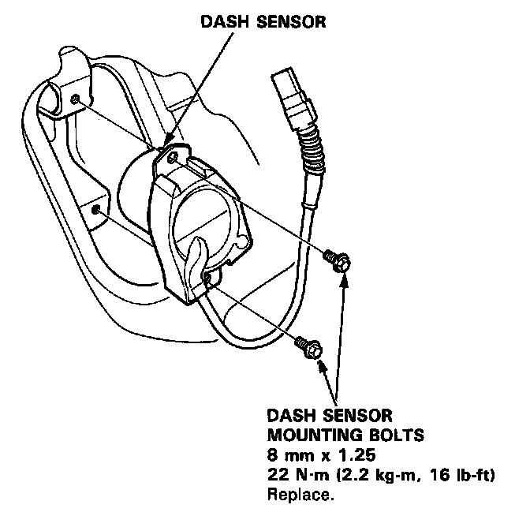

Dash Sensor Installation
Dash Sensor Installation
CAUTION:
- Be sure to install the harness wires so that they are not pinched or interfering with other car parts.
Replace a sensor if there are any signs of dents, cracks or deformation.
- For the SRS to function properly, the right and left sensors must be installed on the proper sides.
1. Be sure the battery cables are disconnected.
2. Install the sensor and sensor harness.

NOTE: Make sure the sensor is installed securely.
3. Install the sensor cover and ECU.
4. Disconnect the short connectors from the airbag connectors and connect the cable reel and airbag harness.
5. Connect the battery positive cable, then connect the negative cable.
6. After installing the dash sensor, confirm proper system operation.
- Turn on the ignition to II: the instrument panel SRS indicator light should go on for about 6 seconds and then go off.
- Enter the customer's code number to restore radio operation [L, LS model].